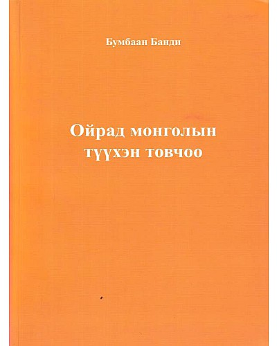

|  |
ДүгнэлтМонголчууд бидний түүх эвтэй нэгдэлтэй байхдаа хүчтэй байж, эвдэрч бутарсан үедээ уруудан доройтож явсан ажээ. Цувж явсан барнаас, цугларч суусан шаазгай дээр гэдэг оноч мэргэн үгний цаад утга энэ буюу. Эрх мэдэл, эдийн шуналд хөтлөгдөн яс булаалцалдсан нохой шиг шүдээ ярзайлгаж, нүүрээ үрчийлгэж, нүдээ бүлтийлгэн бие биенээсээ өрсөн, харийхны өвөр түрүүнд уван цуван орж, эх орон тусгаар тогтнолоо алдаж явсан эмэгнэлт түүхээ бүү давтаасай билээ. |
|---|
Гарах